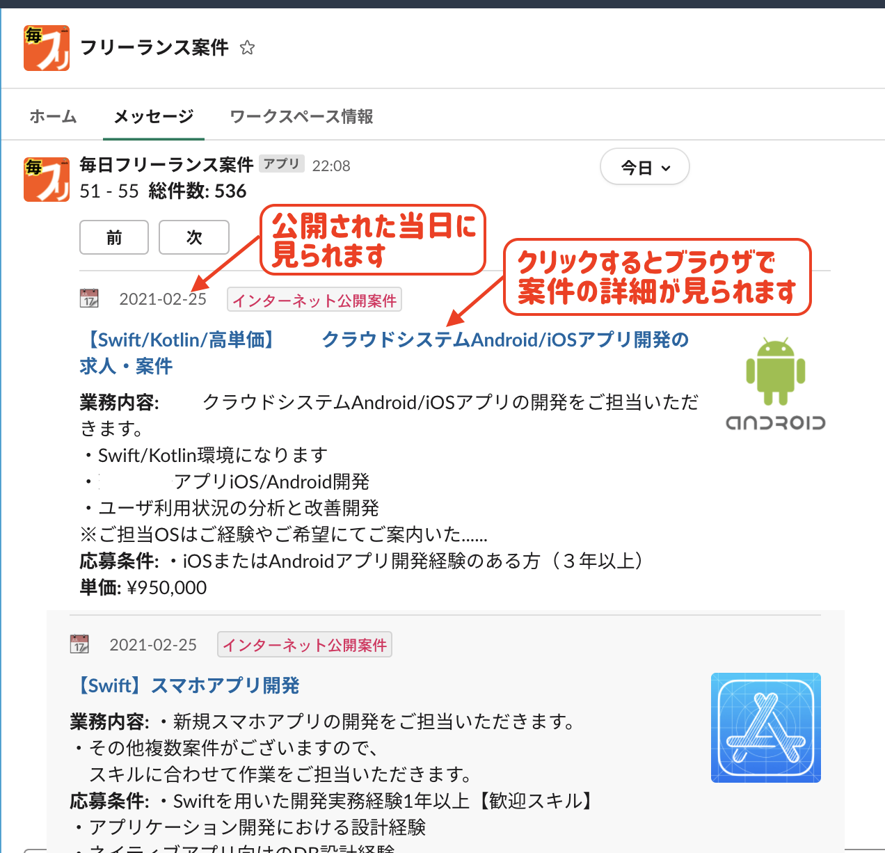
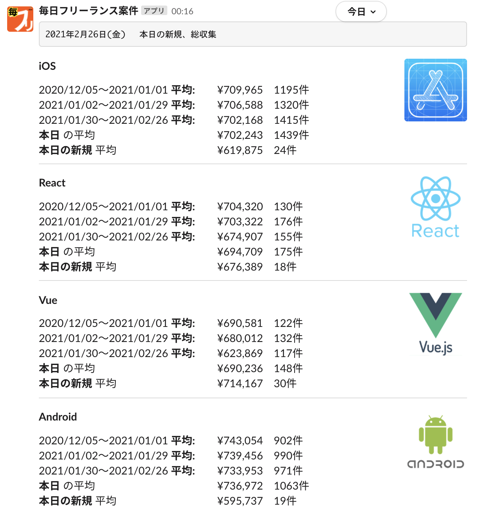
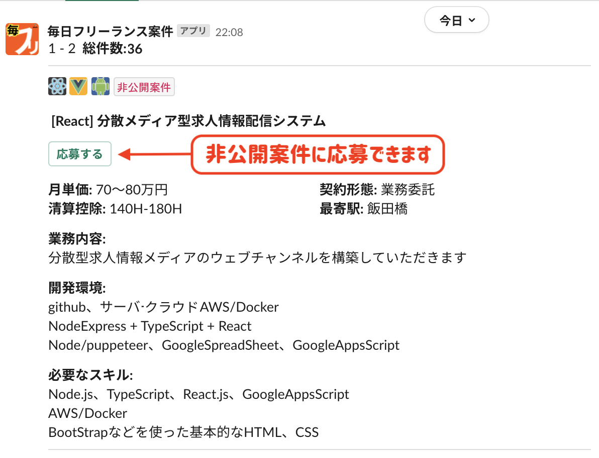

フリーランス案件を毎日おとどけします。
あなたのslackチームにインストール
毎フリSlackの利用はとても簡単。 ボタンをクリックして、Slackアカウントにログインしたら、チームを選択します。
ボットは１度インストールしたら、あなたのチームのチャットルームでスラッシュコマンドが使えるようになります。
次のように打鍵してください/findcase

毎フリ for Slack について
毎フリはインターネットで公開されている案件情報を毎にち収集して配信しています。掲載元リンクでブラウザから詳細を確認できます。
Slackアプリ版ではアプリユーザーが案件を登録できて、ユーザー登録案件には応募することもできます。
４週間ごとの単価と案件数の推移を見られるので、市況感から適切な案件を探しましょう。
▼ 当日に公開された最新の案件が見られます。
▼ 直近12週間の平均の単価の推移が見られます。
▼ インターネットに公開されていない案件に応募できます。
▼ あなたがご存知の案件を登録できます。
毎フリアプリを使っているSlackユーザーで共有してください。